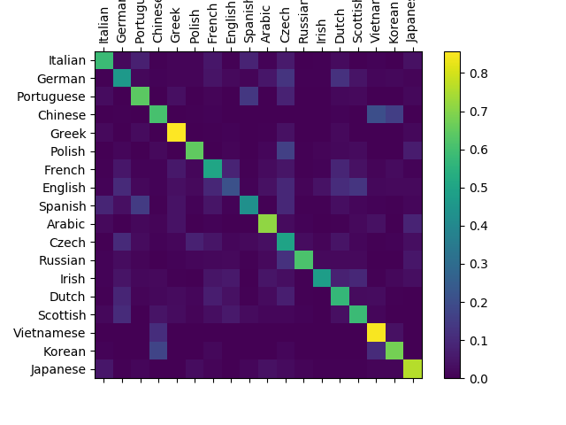

使用字符级别特征的RNN网络进行名字分类
译者：hhxx2015
校对者：hijkzzz
作者: Sean Robertson
我们将构建和训练字符级RNN来对单词进行分类。 字符级RNN将单词作为一系列字符读取，在每一步输出预测和“隐藏状态”，将其先前的隐藏状态输入至下一时刻。 我们将最终时刻输出作为预测结果，即表示该词属于哪个类。
具体来说，我们将在18种语言构成的几千个名字的数据集上训练模型，根据一个名字的拼写预测它是哪种语言的名字：
$ python predict.py Hinton
(-0.47) Scottish
(-1.52) English
(-3.57) Irish
$ python predict.py Schmidhuber
(-0.19) German
(-2.48) Czech
(-2.68) Dutch
推荐阅读:
我默认你已经安装好了PyTorch，熟悉Python语言，理解“张量”的概念：
- https://pytorch.org/ PyTorch安装指南
- Deep Learning with PyTorch: A 60 Minute Blitz PyTorch入门
- Learning PyTorch with Examples 一些PyTorch的例子
- PyTorch for Former Torch Users Lua Torch 用户参考
事先学习并了解RNN的工作原理对理解这个例子十分有帮助:
- The Unreasonable Effectiveness of Recurrent Neural Networks 展示了一些现实生活中的例子
- Understanding LSTM Networks 是关于LSTM的，但也提供有关RNN的一般信息
准备数据
点击这里下载数据 并将其解压到当前文件夹。
在"data/names"文件夹下是名称为"[language].txt"的18个文本文件。每个文件的每一行都有一个名字，它们几乎都是罗马化的文本（但是我们仍需要将其从Unicode转换为ASCII编码）
我们最终会得到一个语言对应名字列表的字典，{language: [names ...]}
通用变量“category”和“line”（例子中的语言和名字单词）用于以后的可扩展性。
from __future__ import unicode_literals, print_function, division
from io import open
import glob
import os
def findFiles(path): return glob.glob(path)
print(findFiles('data/names/*.txt'))
import unicodedata
import string
all_letters = string.ascii_letters + " .,;'"
n_letters = len(all_letters)
# Turn a Unicode string to plain ASCII, thanks to https://stackoverflow.com/a/518232/2809427
def unicodeToAscii(s):
return ''.join(
c for c in unicodedata.normalize('NFD', s)
if unicodedata.category(c) != 'Mn'
and c in all_letters
)
print(unicodeToAscii('Ślusàrski'))
# Build the category_lines dictionary, a list of names per language
category_lines = {}
all_categories = []
# Read a file and split into lines
def readLines(filename):
lines = open(filename, encoding='utf-8').read().strip().split('\n')
return [unicodeToAscii(line) for line in lines]
for filename in findFiles('data/names/*.txt'):
category = os.path.splitext(os.path.basename(filename))[0]
all_categories.append(category)
lines = readLines(filename)
category_lines[category] = lines
n_categories = len(all_categories)
输出:
['data/names/Italian.txt', 'data/names/German.txt', 'data/names/Portuguese.txt', 'data/names/Chinese.txt', 'data/names/Greek.txt', 'data/names/Polish.txt', 'data/names/French.txt', 'data/names/English.txt', 'data/names/Spanish.txt', 'data/names/Arabic.txt', 'data/names/Czech.txt', 'data/names/Russian.txt', 'data/names/Irish.txt', 'data/names/Dutch.txt', 'data/names/Scottish.txt', 'data/names/Vietnamese.txt', 'data/names/Korean.txt', 'data/names/Japanese.txt']
Slusarski
现在我们有了category_lines，一个字典变量存储每一种语言及其对应的每一行文本(名字)列表的映射关系。
变量all_categories是全部语言种类的列表，
变量n_categories 是语言种类的数量，后续会使用
print(category_lines['Italian'][:5])
输出:
['Abandonato', 'Abatangelo', 'Abatantuono', 'Abate', 'Abategiovanni']
单词转化为张量
现在我们已经加载了所有的名字，我们需要将它们转换为张量来使用它们。
我们使用大小为<1 x n_letters>的“one-hot 向量”表示一个字母。
一个one-hot向量所有位置都填充为0，并在其表示的字母的位置表示为1，例如"b" = <0 1 0 0 0 ...>.（字母b的编号是2，第二个位置是1，其他位置是0）
我们使用一个<line_length x 1 x n_letters>的2D矩阵表示一个单词
额外的1维是batch的维度，PyTorch默认所有的数据都是成batch处理的。我们这里只设置了batch的大小为1。
import torch
# 从所有的字母中得到某个letter的索引编号, 例如 "a" = 0
def letterToIndex(letter):
return all_letters.find(letter)
# Just for demonstration, turn a letter into a <1 x n_letters> Tensor
def letterToTensor(letter):
tensor = torch.zeros(1, n_letters)
tensor[0][letterToIndex(letter)] = 1
return tensor
# Turn a line into a <line_length x 1 x n_letters>,
# or an array of one-hot letter vectors
def lineToTensor(line):
tensor = torch.zeros(len(line), 1, n_letters)
for li, letter in enumerate(line):
tensor[li][0][letterToIndex(letter)] = 1
return tensor
print(letterToTensor('J'))
print(lineToTensor('Jones').size())
输出:
tensor([[0., 0., 0., 0., 0., 0., 0., 0., 0., 0., 0., 0., 0., 0., 0., 0., 0., 0.,
0., 0., 0., 0., 0., 0., 0., 0., 0., 0., 0., 0., 0., 0., 0., 0., 0., 1.,
0., 0., 0., 0., 0., 0., 0., 0., 0., 0., 0., 0., 0., 0., 0., 0., 0., 0.,
0., 0., 0.]])
torch.Size([5, 1, 57])
构造神经网络
在autograd之前，要在Torch中构建一个可以复制之前时刻层参数的循环神经网络。
layer的隐藏状态和梯度将交给计算图自己处理。
这意味着你可以像实现的常规的 feed-forward 层一样，以很纯粹的方式实现RNN。
这个RNN组件 (几乎是从这里复制的 the PyTorch for Torch users tutorial) 仅使用两层 linear 层对输入和隐藏层做处理,
在最后添加一层 LogSoftmax 层预测最终输出。

import torch.nn as nn
class RNN(nn.Module):
def __init__(self, input_size, hidden_size, output_size):
super(RNN, self).__init__()
self.hidden_size = hidden_size
self.i2h = nn.Linear(input_size + hidden_size, hidden_size)
self.i2o = nn.Linear(input_size + hidden_size, output_size)
self.softmax = nn.LogSoftmax(dim=1)
def forward(self, input, hidden):
combined = torch.cat((input, hidden), 1)
hidden = self.i2h(combined)
output = self.i2o(combined)
output = self.softmax(output)
return output, hidden
def initHidden(self):
return torch.zeros(1, self.hidden_size)
n_hidden = 128
rnn = RNN(n_letters, n_hidden, n_categories)
要运行此网络的一个步骤，我们需要传递一个输入（在我们的例子中，是当前字母的Tensor）和一个先前隐藏的状态（我们首先将其初始化为零）。
我们将返回输出（每种语言的概率）和下一个隐藏状态（为我们下一步保留使用）。
input = letterToTensor('A')
hidden =torch.zeros(1, n_hidden)
output, next_hidden = rnn(input, hidden)
为了提高效率，我们不希望为每一步都创建一个新的Tensor，因此我们将使用lineToTensor函数而不是letterToTensor函数，并使用切片方法。
这一步可以通过预先计算批量的张量进一步优化。
input = lineToTensor('Albert')
hidden = torch.zeros(1, n_hidden)
output, next_hidden = rnn(input[0], hidden)
print(output)
输出:
tensor([[-2.8857, -2.9005, -2.8386, -2.9397, -2.8594, -2.8785, -2.9361, -2.8270,
-2.9602, -2.8583, -2.9244, -2.9112, -2.8545, -2.8715, -2.8328, -2.8233,
-2.9685, -2.9780]], grad_fn=<LogSoftmaxBackward>)
可以看到输出是一个<1 x n_categories>的张量，其中每一条代表这个单词属于某一类的可能性（越高可能性越大）
训练
训练前的准备
进行训练步骤之前我们需要构建一些辅助函数。
第一个是当我们知道输出结果对应每种类别的可能性时，解析神经网络的输出。
我们可以使用 Tensor.topk函数得到最大值在结果中的位置索引
def categoryFromOutput(output):
top_n, top_i = output.topk(1)
category_i = top_i[0].item()
return all_categories[category_i], category_i
print(categoryFromOutput(output))
输出:
('Vietnamese', 15)
我们还需要一种快速获取训练示例（得到一个名字及其所属的语言类别）的方法：
import random
def randomChoice(l):
return l[random.randint(0, len(l) - 1)]
def randomTrainingExample():
category = randomChoice(all_categories)
line = randomChoice(category_lines[category])
category_tensor = torch.tensor([all_categories.index(category)], dtype=torch.long)
line_tensor = lineToTensor(line)
return category, line, category_tensor, line_tensor
for i in range(10):
category, line, category_tensor, line_tensor = randomTrainingExample()
print('category =', category, '/ line =', line)
输出:
category = Russian / line = Minkin
category = French / line = Masson
category = German / line = Hasek
category = Dutch / line = Kloeten
category = Scottish / line = Allan
category = Italian / line = Agostini
category = Japanese / line = Fumihiko
category = Polish / line = Gajos
category = Scottish / line = Duncan
category = Arabic / line = Gerges
训练神经网络
现在，训练过程只需要向神经网络输入大量的数据，让它做出预测，并将对错反馈给它。
nn.LogSoftmax作为最后一层layer时，nn.NLLLoss作为损失函数是合适的。
criterion = nn.NLLLoss()
训练过程的每次循环将会发生：
- 构建输入和目标张量
- 构建0初始化的隐藏状态
- 读入每一个字母
- 将当前隐藏状态传递给下一字母
- 比较最终结果和目标
- 反向传播
- 返回结果和损失
learning_rate = 0.005 # If you set this too high, it might explode. If too low, it might not learn
def train(category_tensor, line_tensor):
hidden = rnn.initHidden()
rnn.zero_grad()
for i in range(line_tensor.size()[0]):
output, hidden = rnn(line_tensor[i], hidden)
loss = criterion(output, category_tensor)
loss.backward()
# Add parameters' gradients to their values, multiplied by learning rate
for p in rnn.parameters():
p.data.add_(-learning_rate, p.grad.data)
return output, loss.item()
现在我们只需要准备一些例子来运行程序。
由于train函数同时返回输出和损失，我们可以打印其输出结果并跟踪其损失画图。
由于有1000个示例，我们每print_every次打印样例，并求平均损失。
import time
import math
n_iters = 100000
print_every = 5000
plot_every = 1000
# Keep track of losses for plotting
current_loss = 0
all_losses = []
def timeSince(since):
now = time.time()
s = now - since
m = math.floor(s / 60)
s -= m * 60
return '%dm %ds' % (m, s)
start = time.time()
for iter in range(1, n_iters + 1):
category, line, category_tensor, line_tensor = randomTrainingExample()
output, loss = train(category_tensor, line_tensor)
current_loss += loss
# Print iter number, loss, name and guess
if iter % print_every == 0:
guess, guess_i = categoryFromOutput(output)
correct = '✓' if guess == category else '✗ (%s)' % category
print('%d %d%% (%s) %.4f %s / %s %s' % (iter, iter / n_iters * 100, timeSince(start), loss, line, guess, correct))
# Add current loss avg to list of losses
if iter % plot_every == 0:
all_losses.append(current_loss / plot_every)
current_loss = 0
输出:
5000 5% (0m 11s) 2.0318 Jaeger / German ✓
10000 10% (0m 18s) 2.1296 Sokolofsky / Russian ✗ (Polish)
15000 15% (0m 26s) 1.2620 Jo / Korean ✓
20000 20% (0m 34s) 1.9295 Livson / Scottish ✗ (Russian)
25000 25% (0m 41s) 1.2325 Fortier / French ✓
30000 30% (0m 49s) 2.5714 Purdes / Dutch ✗ (Czech)
35000 35% (0m 56s) 2.3312 Bayer / Arabic ✗ (German)
40000 40% (1m 4s) 2.3792 Mitchell / Dutch ✗ (Scottish)
45000 45% (1m 12s) 1.3536 Maes / Dutch ✓
50000 50% (1m 20s) 2.6095 Sai / Chinese ✗ (Vietnamese)
55000 55% (1m 28s) 0.5883 Cheung / Chinese ✓
60000 60% (1m 35s) 1.5788 William / Irish ✓
65000 65% (1m 43s) 2.5809 Mulder / Scottish ✗ (Dutch)
70000 70% (1m 51s) 1.3440 Bruce / German ✗ (Scottish)
75000 75% (1m 58s) 1.1839 Romero / Italian ✗ (Spanish)
80000 80% (2m 6s) 2.6453 Reyes / Portuguese ✗ (Spanish)
85000 85% (2m 14s) 0.0290 Mcmillan / Scottish ✓
90000 90% (2m 22s) 0.7337 Riagan / Irish ✓
95000 95% (2m 30s) 2.6208 Maneates / Dutch ✗ (Greek)
100000 100% (2m 37s) 0.5170 Szwarc / Polish ✓
画出结果
从all_losses得到历史损失记录，反映了神经网络的学习情况：
import matplotlib.pyplot as plt
import matplotlib.ticker as ticker
plt.figure()
plt.plot(all_losses)
评价结果
为了了解网络在不同类别上的表现，我们将创建一个混淆矩阵，显示每种语言（行）和神经网络将其预测为哪种语言（列）。
为了计算混淆矩阵，使用evaluate()函数处理了一批数据，evaluate()函数与去掉反向传播的train()函数大体相同。
# Keep track of correct guesses in a confusion matrix
confusion = torch.zeros(n_categories, n_categories)
n_confusion = 10000
# Just return an output given a line
def evaluate(line_tensor):
hidden = rnn.initHidden()
for i in range(line_tensor.size()[0]):
output, hidden = rnn(line_tensor[i], hidden)
return output
# Go through a bunch of examples and record which are correctly guessed
for i in range(n_confusion):
category, line, category_tensor, line_tensor = randomTrainingExample()
output = evaluate(line_tensor)
guess, guess_i = categoryFromOutput(output)
category_i = all_categories.index(category)
confusion[category_i][guess_i] += 1
# Normalize by dividing every row by its sum
for i in range(n_categories):
confusion[i] = confusion[i] / confusion[i].sum()
# Set up plot
fig = plt.figure()
ax = fig.add_subplot(111)
cax = ax.matshow(confusion.numpy())
fig.colorbar(cax)
# Set up axes
ax.set_xticklabels([''] + all_categories, rotation=90)
ax.set_yticklabels([''] + all_categories)
# Force label at every tick
ax.xaxis.set_major_locator(ticker.MultipleLocator(1))
ax.yaxis.set_major_locator(ticker.MultipleLocator(1))
# sphinx_gallery_thumbnail_number = 2
plt.show()

你可以从主轴线以外挑出亮的点，显示模型预测错了哪些语言，例如汉语预测为了韩语，西班牙预测为了意大利。
看上去在希腊语上效果很好，在英语上表现欠佳。（可能是因为英语与其他语言的重叠较多）。
处理用户输入
def predict(input_line, n_predictions=3):
print('\n> %s' % input_line)
with torch.no_grad():
output = evaluate(lineToTensor(input_line))
# Get top N categories
topv, topi = output.topk(n_predictions, 1, True)
predictions = []
for i in range(n_predictions):
value = topv[0][i].item()
category_index = topi[0][i].item()
print('(%.2f) %s' % (value, all_categories[category_index]))
predictions.append([value, all_categories[category_index]])
predict('Dovesky')
predict('Jackson')
predict('Satoshi')
输出:
> Dovesky
(-0.74) Russian
(-0.77) Czech
(-3.31) English
> Jackson
(-0.80) Scottish
(-1.69) English
(-1.84) Russian
> Satoshi
(-1.16) Japanese
(-1.89) Arabic
(-1.90) Polish
最终版的脚本 in the Practical PyTorch repo 将上述代码拆分为几个文件：
data.py(读取文件)model.py(构造RNN网络)train.py(运行训练过程)predict.py(在命令行中和参数一起运行predict()函数)server.py(使用bottle.py构建JSON API的预测服务)
运行 train.py 来训练和保存网络
将predict.py和一个名字的单词一起运行查看预测结果 :
$ python predict.py Hazaki
(-0.42) Japanese
(-1.39) Polish
(-3.51) Czech
运行 server.py 并访问http://localhost:5533/Yourname 得到JSON格式的预测输出
练习
- 尝试其它 （类别->行） 格式的数据集，比如:
- 任何单词 -> 语言
- 姓名 -> 性别
- 角色姓名 -> 作者
- 页面标题 -> blog 或 subreddit
- 通过更大和更复杂的网络获得更好的结果
- 增加更多linear层
- 尝试
nn.LSTM和nn.GRU层 - 组合这些 RNN构造更复杂的神经网络